LIGHTSHED
We Are Lightshed. Virtual reality has the power to transport viewers to distant planets and faraway lands.Now we’re using it to share a more significant alternate reality—shedding light on the everyday lives of people struggling to survive all over the world. Because we believe immersive storytelling leads to empathy. And empathy leads to action. Join us.
Long the purview of the gaming world, virtual reality represents a new frontier for journalism.
– The New York Times
CREATING IMPACT
In January 2015, we debuted "Clouds over Sidra," a Virtual Reality film that transported world leaders from the World Economic Forum at Davos to the Zaatari Syrian refugee camp guided by a brave 12 year old girl.
We've found that Unicef donations increased 60% after viewing the film—a dramatic increase in awareness, participation, and impact.
That's power of how immersive storytelling leads to action — and we’re just getting started.
Long the purview of the gaming world, virtual reality represents a new frontier for journalism.
– The New York Times
OUR WORK
We believe in technology as a vehicle for art and activism, but our work isn’t limited to VR films. There are myriad ways to tell an immersive story and connect people. We're committed to spurring action through our films, exhibits, gatherings, and much, much more.
WAVES OF GRACE
After surviving a bout with the deadly disease that stole the lives of her family, Decontee, a Liberian native, uses her immunity to help children orphaned by Ebola. This VR experience follows her story from illness to recovery, mourning to perseverance.
CLOUDS OVER SIDRA
“Clouds Over Sidra” follows a young girl in the Za’atari camp in Jordan–home to 84,000 Syrian refugees. This is the film that took U.N. leaders on a tour of her makeshift tent, her school, and even the camp’s football pitch.
WAVES IN NY
I'm standing on the rooftop of an abandoned building in Monrovia, Liberia. My gaze drifts from the setting sun to the man next to me strumming a homemade guitar. Singing along is a young woman named Decontee Davis, a survivor of the Ebola pandemic that has tormented West Africa since 2013. She’s just led me on a tear-jerking tour of her life here in Liberia, including the hospital where her immunity lets her nurse the sick without risk of infection.
PORTAL TO SYRIA AT UN’S 70TH GENERAL ASSEMBLY
Step into one of our exhibits and experience the power of being on the ground, immersed in the lives of the incredible subjects of our stories.
Interactive HUB UN'S 70TH GENERAL ASSEMBLY
The UN hub filled with interactive screens is designed to promote the UN's "Global Goals," also known as Sustainable Development Goals
The Millennium Campaign is running the media center in cooperation with Facebook, which is there showcasing its internet.org, a controversial effort to bring affordable web access to developing countries. Mark Zuckerberg is expected to make an appearance.
ACT
SUPPORT THE CAUSE
SPREAD THE WORD
JOIN US
Donate to the Ebola cause
Donate to the Syrian children
Share this link
Fund our Kickstarter campaign
Connect with us
“It’s hard to grasp the buzz around virtual reality until you actually put on a headset.”
- Wall Street Journal
“The day virtual reality made me cry.”
-CNET
“We’re barely at the beginning of this medium... It is fascinating to think about and talk about what forms of storytelling will evolve.”
- Spike Jones
“This ebola documentary shows virtual reality’s radical potential.””
- Wired
“The day virtual reality made me cry.”
-CNET